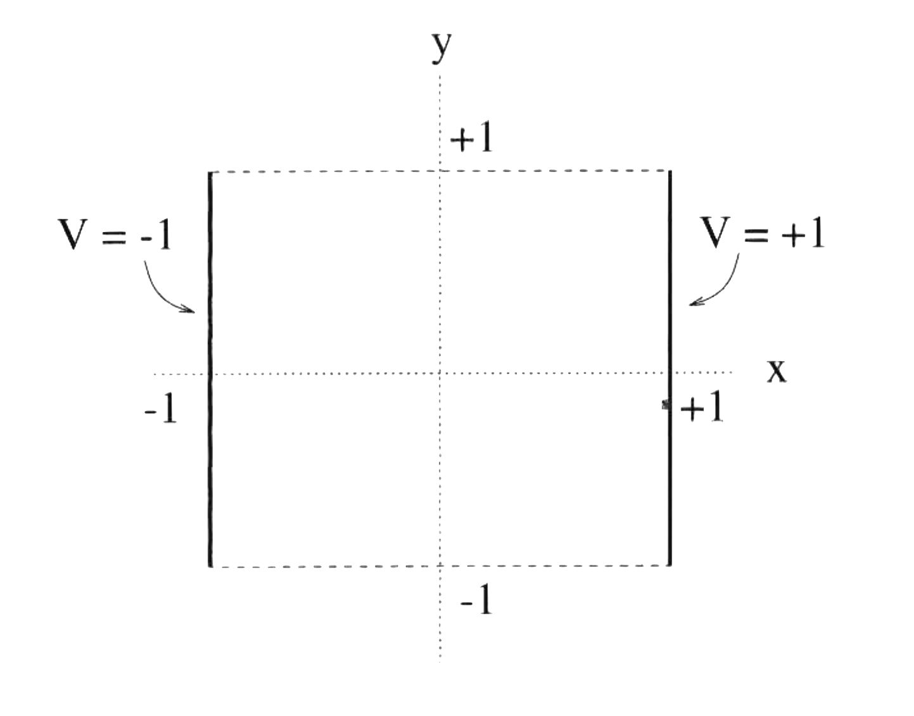
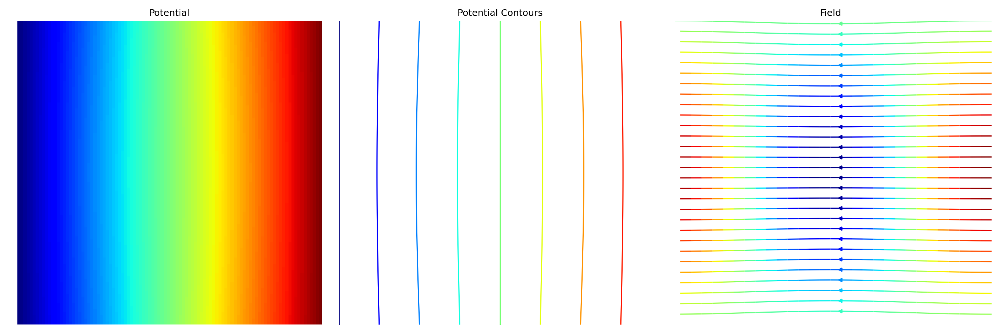
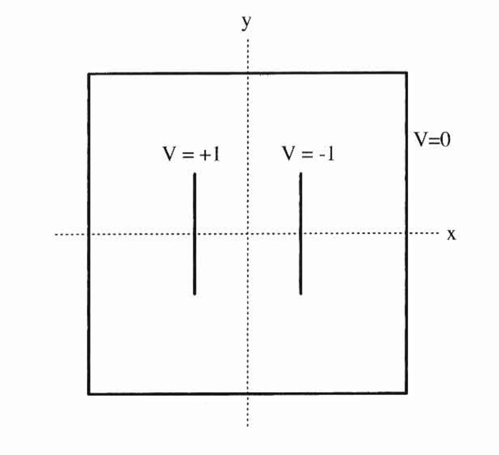
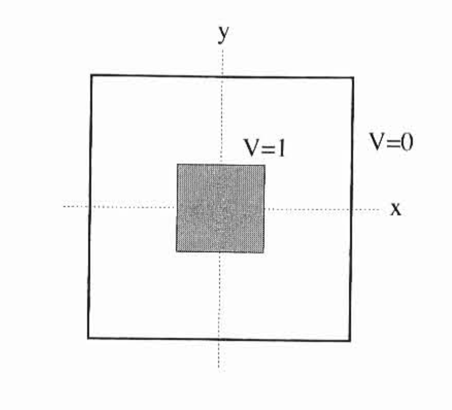
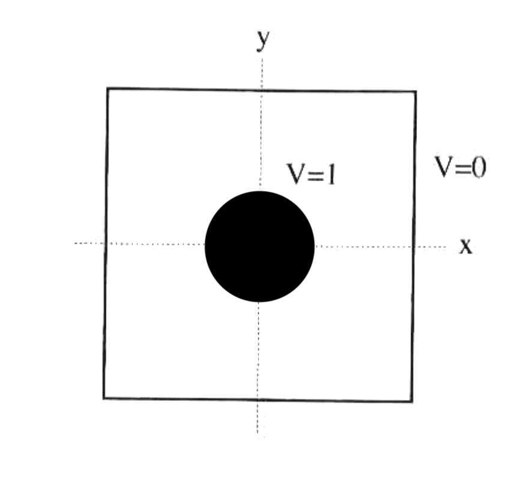

library(reticulate)
use_python("/Users/chammika/miniconda3/envs/quarto/bin/python3")Laplace Numerically
\[ \newcommand\pa[2]{\dfrac{\partial #1}{\partial #2}} \newcommand\paa[2]{\dfrac{\partial^2 #1}{\partial #2^2}} \]
1 Introduction
In this problem, we will solve Laplace’s equation numerically using a finite difference (‘grid’) method called Jacobi Relaxation.
1.1 Jacobi Relaxation
\[ \paa{V}{x} + \paa{V}{y} + \paa{V}{z} = 0 \]
We start by recasting Laplace’s equation numerically. For this, we discretize space into voxels of size \(\Delta x \times \Delta y \times \Delta z\) that we reference using integers \(i, j, k\).
First, let’s look at the first partial derivative in the \(x\) dimension.
\[ \begin{align} \text{Centered around $i+\frac{1}{2}$:}\qquad\pa{V}{x} &\approx\dfrac{V(i+1,j,k)-V(i,j,k)}{\Delta x}\\[1.5em] \text{Centered around $i-\frac{1}{2}$:}\qquad\pa{V}{x} &\approx\dfrac{V(i,j,k)-V(i-1,j,k)}{\Delta x}\\[1.5em] \end{align} \]
We can now determine the second partial derivative as,
\[ \begin{align} \paa{V}{x}\approx&\dfrac{1}{\Delta x}\left[\left.\pa{V}{x}\right|_{i+\frac{1}{2}}-\quad\left.\pa{V}{x}\right|_{i-\frac{1}{2}}\right] \\[1.5em] \approx& \dfrac{V(i+1,j,k)-2V(i,j,k)+V(i-1,j,k)}{(\Delta x)^2} \end{align} \]
We can make similar approximations for the other dimensions.
\[ \begin{align} \paa{V}{y}\approx&\dfrac{V(i,j+1,k)-2V(i,j,k)+V(i,j-1,k)}{(\Delta y)^2}\\[1.25em] \paa{V}{z}\approx&\dfrac{V(i,j,k+1)-2V(i,j,k)+V(i,j,k-1)}{(\Delta z)^2} \end{align} \]
Then, taking \(\Delta x = \Delta y = \Delta z\) we can rewrite Laplace’s equation as:
\[ \begin{align} V(i,j,k) \approx \dfrac{1}{6}[\quad&V(i+1,j,k) + V(i-1,j,k)\\[1em] +&\;V(i,j+1,k)+ V(i,j-1,k)\\[1.1em] +&\;V(i,j,k+1)+ V(i,j,k-1)\quad] \end{align} \tag{1}\]
The relaxation method uses this approximation iteratively until the values of \(V\) over the whole grid stabilise. I.e. we start with some approximate state of the grid (\(V_0\)) and reuse the equation over and over again until the values stop changing.
2 Tasks 1: Starting simple
Let’s first slowly build up our simulation code with a simple setup to make sure that all of us have the correct working code. Let’s work on the following system that has two infinitely large conducting plates at potentials \(-1\) and \(+1\). Since the potential is independent of \(z\) we essentially have a simple 2D problem.

Create a 2D Numpy array of size \(N\times N\) and call it grid. Initialise grid so that it looks as shown below with \(N=10\):
| 0 | 1 | 2 | 3 | 4 | 5 | 6 | 7 | 8 | 9 | |
|---|---|---|---|---|---|---|---|---|---|---|
| 0 | -1.0 | -0.778 | -0.556 | -0.333 | -0.111 | 0.111 | 0.333 | 0.556 | 0.778 | 1.0 |
| 1 | -1.0 | 0.000 | 0.000 | 0.000 | 0.000 | 0.000 | 0.000 | 0.000 | 0.000 | 1.0 |
| 2 | -1.0 | 0.000 | 0.000 | 0.000 | 0.000 | 0.000 | 0.000 | 0.000 | 0.000 | 1.0 |
| 3 | -1.0 | 0.000 | 0.000 | 0.000 | 0.000 | 0.000 | 0.000 | 0.000 | 0.000 | 1.0 |
| 4 | -1.0 | 0.000 | 0.000 | 0.000 | 0.000 | 0.000 | 0.000 | 0.000 | 0.000 | 1.0 |
| 5 | -1.0 | 0.000 | 0.000 | 0.000 | 0.000 | 0.000 | 0.000 | 0.000 | 0.000 | 1.0 |
| 6 | -1.0 | 0.000 | 0.000 | 0.000 | 0.000 | 0.000 | 0.000 | 0.000 | 0.000 | 1.0 |
| 7 | -1.0 | 0.000 | 0.000 | 0.000 | 0.000 | 0.000 | 0.000 | 0.000 | 0.000 | 1.0 |
| 8 | -1.0 | 0.000 | 0.000 | 0.000 | 0.000 | 0.000 | 0.000 | 0.000 | 0.000 | 1.0 |
| 9 | -1.0 | -0.778 | -0.556 | -0.333 | -0.111 | 0.111 | 0.333 | 0.556 | 0.778 | 1.0 |
Create a function called get_neighbours(i,j) that returns the coordinates of the four neighbours of any grid point \((i,j)\). Make sure that you function handles ‘stepping off the grid’ correctly. In such a situation, you should return only the values on the grid.
Although it is not necessary, if you like, you can implement an argument to decide whether cyclic or non-cyclic boundary conditions are to be used. I recommend starting with non-cyclic boundaries.
Write a function called laplace_sum(grid_now) that accepts the grid and implements Equation 1. It should return the updated grid.
Note: - Be careful that you do not change the values of the boundary. - You will have to work on a copy of the grid.
Using \(N=50\) apply laplace_sum(grid_now) in a loop to reach the steady-state solution. To keep track of the convergence of the solution use a variable \(\Delta V\) that is calculated using:
\[ \Delta V = \sum \left|V_n - V_{n-1}\right| \]
Stop the iterations when \(\Delta V < 1 \times 10^{-5} N\times N\)
Create a function to calculate the gradients \(\pa{V}{x}\), \(\pa{V}{y}\). Use this to determine the electric field.
You can visualise your results as following

2.1 Tasks 2: Speed up
Profile your code to look for bottlenecks. Then implment changes to speed up. You might want to look at replacing your for loops with purely Numpy operations. np.roll() might be useful…
2.2 Tasks 3: Different Geometries
Apply the Relaxation technique to determine the electric field for the geometries shown below.


